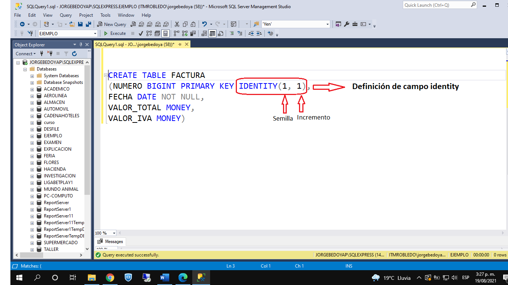
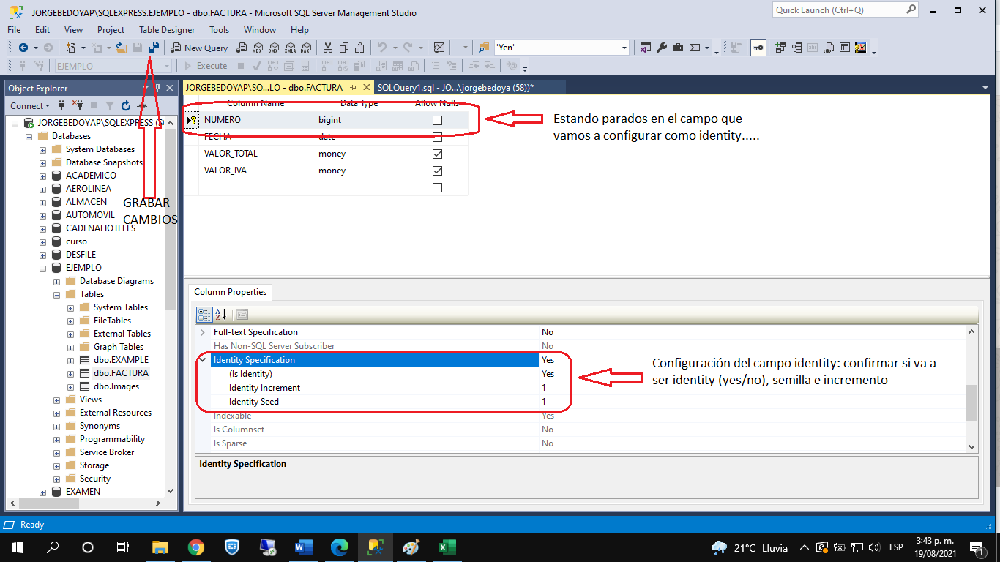
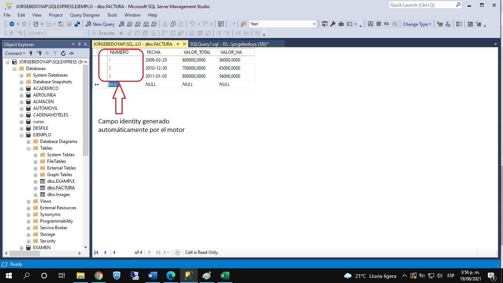
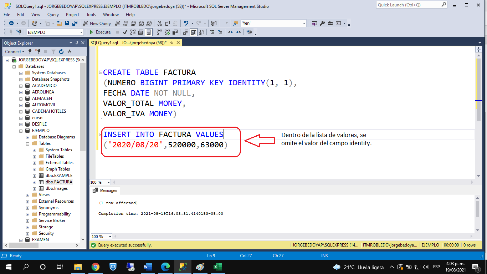

En bases de datos, en general, existe un tipo de campo llamado autoincrementable. En SQL Server, a dicho campo se le denomina campo IDENTITY.
Un campo tipo IDENTITY es un campo cuyo valor es administrado por el motor de la base de datos, no por el usuario. Es decir, el valor de dicho campo es asignado, automáticamente, por el motor de la base de datos, de acuerdo a dos parámetros:
- Valor semilla: Valor inicial del campo, es decir, cual va a ser el primer valor que va a grabar en dicho campo.
- Incremento: A partir del valor semilla, los siguientes valores van a ir de cuanto en cuanto.
Una tabla solo puede tener un campo de este tipo, no puede tener dos o más.
|  |
Para crear un campo tipo IDENTITY por modo comando, utilizamos la sintaxis que hay en la imagen del lado. En este caso, estamos definiendo al campo llamado NUMERO como identity, con semilla 1 e incremento 1. De esta manera, cuando grabemos las facturas, la primera factura grabada será la número 1, luego la número 2 y así sucesivamente, de uno en uno. |
|  |
Para configurar un campo identity por modo gráfico, vamos al diseño de la tabla, nos ubicamos en el campo que vamos a configurar y luego nos vamos para las propiedades de dicho campo, tal y como se ve en la imagen. El campo se configura en la propiedad llamada Identity Specification. Luego de configurar el campo, no olvidar grabar la configuración, dándole clic al disco de grabar, en la parte superior de la pantalla. |
|  |
Cuando estamos insertando datos, por modo gráfico, en una tabla que tiene un campo identity, dicho campo no es editable. Si con el cursor nos paramos en dicho campo y tratamos de digitar algún valor, el sistema no nos deja. Cuando terminamos de digitar los datos de una tupla, al dar ENTER para grabar dicha tupla, en el campo identity aparece automáticamente el valor generado por el motor. |
|  | Cuando vamos a insertar una tupla en una tabla con un campo tipo IDENTITY, en la lista de valores especificada en la cláusula VALUES se omite el valor de dicho campo, tal y como se ve en la imagen. |
Video:
| CAMPO IDENTITY | MANIPULAR VALOR DE CAMPO IDENTITY |